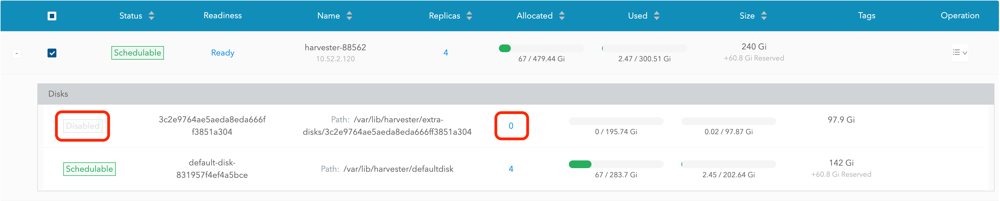

|
Dieses Dokument wurde mithilfe automatisierter maschineller Übersetzungstechnologie übersetzt. Wir bemühen uns um korrekte Übersetzungen, übernehmen jedoch keine Gewähr für die Vollständigkeit, Richtigkeit oder Zuverlässigkeit der übersetzten Inhalte. Im Falle von Abweichungen ist die englische Originalversion maßgebend und stellt den verbindlichen Text dar. |
Hostverwaltung
Benutzer können SUSE Virtualization Knoten von der Host-Seite aus anzeigen und verwalten. Der erste Knoten ist immer standardmäßig ein Verwaltungsknoten des Clusters. Wenn es drei oder mehr Knoten gibt, werden die zwei anderen Knoten, die zuerst beigetreten sind, automatisch zu Verwaltungsknoten befördert, um einen HA-Cluster zu bilden.
|
Da SUSE Virtualization auf Kubernetes basiert und etcd als Datenbank verwendet, beträgt die maximale Fehlertoleranz für Knoten eins, wenn es drei Verwaltungsknoten gibt. |

SUSE Virtualization reserviert CPU-Ressourcen für systemnahe Operationen, weshalb die insgesamt in der CPU Spalte angegebene Anzahl an Kernen leicht geringer ist als die tatsächliche Anzahl an Kernen auf jedem Host. Für weitere Informationen siehe Berechnung des gemeinsamen CPU-Pools.
Knotenwartung
Administratoren können den Wartungsmodus aktivieren (wählen Sie ⋮ > Wartungsmodus aktivieren), um alle virtuellen Maschinen automatisch von einem Knoten zu evakuieren. Dieser Modus nutzt Batch-Migration, um die live-migrierbaren virtuellen Maschinen auf andere Knoten zu verschieben, was nützlich ist, wenn Sie den Knoten neu starten, die Firmware aktualisieren oder Hardwarekomponenten ersetzen müssen. Mindestens zwei aktive Knoten sind erforderlich, um diese Funktion zu nutzen.
Nicht-migrierbare virtuelle Maschinen können verhindern, dass der Knoten den Wartungsmodus aktiviert. Wenn dies geschieht, müssen Sie diese virtuellen Maschinen identifizieren und manuell herunterfahren. Für weitere Informationen siehe Live-Migration.
Um einzelne VMs zum Herunterfahren zu zwingen, anstatt sie auf andere Knoten zu migrieren, fügen Sie das Label harvesterhci.io/maintain-mode-strategy und einen der folgenden Werte zu diesen VMs hinzu:
-
Migrate: Migriert die VM live zu einem anderen Knoten im Cluster. Dies ist das Standardverhalten, wenn das Labelharvesterhci.io/maintain-mode-strategynicht gesetzt ist. -
ShutdownAndRestartAfterEnable: Startet die VM neu, nachdem der Knoten in den Wartungsmodus wechselt. Die VM wird auf einem anderen Knoten geplant. -
ShutdownAndRestartAfterDisable: Fährt die VM herunter, wenn der Wartungsmodus aktiviert ist, und startet die VM neu, wenn der Wartungsmodus deaktiviert ist. Die VM bleibt auf demselben Knoten. -
Shutdown: Die VM wird heruntergefahren, wenn der Wartungsmodus aktiviert ist. Die VM bleibt ausgeschaltet, anstatt neu zu starten.
Sie können das kollektive Herunterfahren aller VMs auf einem Knoten über den Bildschirm Wartungsmodus aktivieren erzwingen. Dies deaktiviert individuelle Einstellungen mit dem harvesterhci.io/maintain-mode-strategy-Label.
Um einen speziellen Befehl vor dem Herunterfahren einer VM auszuführen, sollten Sie den Container-Lebenszyklus-Hook PreStop verwenden.

Einen Knoten absperren
Abgesperrte Knoten werden als nicht planbar markiert. Das Absperren ist nützlich, wenn Sie verhindern möchten, dass neue Arbeitslasten auf einem Knoten geplant werden. Sie können einen Knoten entsperren, um ihn wieder planbar zu machen.

Einen Knoten löschen
|
Bevor Sie einen Knoten aus einem SUSE Virtualization Cluster entfernen, stellen Sie fest, ob die verbleibenden Knoten über genügend Rechen- und Speicherressourcen verfügen, um die Arbeitslast des zu entfernenden Knotens zu übernehmen. Weitere Informationen finden Sie in den folgenden Abschnitten:
Wenn die verbleibenden Knoten nicht über genügend Ressourcen verfügen, können VMs möglicherweise nicht migrieren und Volumes können sich verschlechtern, wenn Sie einen Knoten entfernen. |
1. Überprüfen Sie, ob der Knoten aus dem Cluster entfernt werden kann.
Sie können einen Steuerungsknoten sicher entfernen, abhängig von der Anzahl und Verfügbarkeit anderer Knoten im Cluster.
-
Der Cluster hat drei Steuerungsknoten und einen oder mehrere Arbeitsknoten.
Wenn Sie einen Steuerungsknoten entfernen, wird ein Arbeitsknoten zum Steuerungsknoten befördert. SUSE Virtualization ermöglicht es Ihnen, jedem Knoten, der einem Cluster beitritt, eine Rolle zuzuweisen. In früheren Versionen wurden Arbeitsknoten zufällig für die Beförderung ausgewählt. Wenn Sie bestimmte Knoten befördern möchten, siehe Rollenverwaltung und Konfigurationsdatei für weitere Informationen.
Die automatische Beförderung von Knoten erfolgt nur, wenn ein Steuerungsknoten aus dem Cluster gelöscht wird. Dies schließt keine Situationen ein, in denen ein Knoten aufgrund fehlgeschlagener Gesundheitsprüfungen nicht verfügbar wird. Der ungesunde Knoten behält seine Rolle.
-
Der Cluster hat drei Steuerungsknoten und keine Arbeitsknoten.
Sie müssen einen neuen Knoten zum Cluster hinzufügen, bevor Sie einen Steuerungsknoten entfernen. Dies stellt sicher, dass der Cluster immer drei Steuerungsknoten hat und dass ein Quorum gebildet werden kann, selbst wenn ein Steuerungsknoten ausfällt.
-
Der Cluster hat nur zwei Steuerungsknoten und keine Arbeitsknoten.
Das Entfernen eines Steuerungsknotens in dieser Situation wird nicht empfohlen, da die etcd-Daten in einem Einzelknoten-Cluster nicht repliziert werden. Der Ausfall eines einzelnen Knotens kann dazu führen, dass etcd sein Quorum verliert und den Cluster herunterfährt.
2. Überprüfen Sie den Status der Volumes.
-
Greifen Sie auf die eingebettete SUSE Storage Benutzeroberfläche zu.
-
Gehen Sie zum Volume-Bildschirm.
-
Überprüfen Sie, dass der Zustand aller Volumes Gesund ist.
3. Evakuieren Sie Replikate von dem Knoten, der entfernt werden soll.
-
Greifen Sie auf die eingebettete SUSE Storage Benutzeroberfläche zu.
-
Gehen Sie zum Knoten Bildschirm.
-
Wählen Sie den Knoten aus, den Sie entfernen möchten, klicken Sie auf das Symbol in der Operation-Spalte und wählen Sie dann Knoten und Festplatten bearbeiten.
-
Konfigurieren Sie die folgenden Einstellungen:
-
Knotenplanung: Wählen Sie Deaktivieren.
-
Evakuierung angefordert: Wählen Sie Wahr.
-
-
Klicken Sie auf Speichern.
-
Gehen Sie zurück zum Knoten-Bildschirm und überprüfen Sie, dass der Replicas-Wert für den zu entfernenden Knoten 0 beträgt.
|
Die Ausweisung kann nicht abgeschlossen werden, wenn die verbleibenden Knoten keine Replikate vom zu entfernenden Knoten akzeptieren können. In diesem Fall bleiben einige Volumes im Degraded-Zustand, bis Sie weitere Knoten zum Cluster hinzufügen. |
4. Verwalten Sie nicht migrierbare virtuelle Maschinen.
Überprüfen Sie, ob es nicht migrierbare virtuelle Maschinen gibt.
|
5. Weisen Sie Arbeitslasten vom zu entfernenden Knoten aus.
Sie können den Wartungsmodus auf dem Knoten aktivieren, um VMs und Arbeitslasten automatisch live zu migrieren. Sie können auch VMs manuell auf andere Knoten live migrieren.
Alle Arbeitslasten wurden erfolgreich ausgewiesen, wenn der Knotenstatus Wartung ist.

|
Wenn ein Cluster nur zwei Steuerungsknoten hat, erlaubt SUSE Virtualization nicht, den Wartungsmodus auf einem Knoten zu aktivieren. Sie können den zu entfernenden Knoten manuell mit dem folgenden Befehl entleeren: kubectl drain <node_name> --force --ignore-daemonsets --delete-local-data --pod-selector='app!=csi-attacher,app!=csi-provisioner' Das Entfernen eines Steuerungsknotens in dieser Situation wird nicht empfohlen, da die etcd-Daten nicht repliziert werden. Der Ausfall eines einzelnen Knotens kann dazu führen, dass etcd sein Quorum verliert und den Cluster herunterfährt. |
6. Löschen Sie die RKE2-Dienste und fahren Sie den Knoten herunter.
-
Melden Sie sich am Knoten mit dem Root-Konto an.
-
Führen Sie das Skript
/opt/rke2/bin/rke2-uninstall.shaus, um die auf dem Knoten laufenden RKE2-Dienste zu löschen. -
Fahren Sie den Knoten herunter.
7. Entfernen Sie den Knoten.
-
Gehen Sie in der Benutzeroberfläche zum Hosts-Bildschirm.
-
Suchen Sie den Knoten, den Sie entfernen möchten, und klicken Sie dann auf ⋮ → Löschen.

|
Es gibt ein bekanntes Problem mit dem harten Löschen von Knoten. Sobald das Problem behoben ist, können Sie diesen Schritt überspringen. |
Rollenverwaltung
Hardwareprobleme können Sie zwingen, den Verwaltungsknoten zu ersetzen. SUSE Virtualization verbessert den Prozess, indem die folgenden Rollen eingeführt werden:
-
Management: Ermöglicht es einem Knoten, priorisiert zu werden, wenn SUSE Virtualization Knoten zu Verwaltungsknoten befördert werden.
-
Zeuge: Beschränkt einen Knoten darauf, ein Zeugenknoten (funktioniert nur als etcd-Knoten) in einem bestimmten Cluster zu sein.
-
Arbeiter: Beschränkt einen Knoten darauf, ein Arbeiterknoten (niemals zum Verwaltungsknoten befördert) in einem bestimmten Cluster zu sein.
|
SUSE Virtualization erlaubt derzeit nur einen Zeugenknoten im Cluster. |
Für weitere Informationen zur Zuweisung von Rollen an Knoten siehe ISO-Installation.
Multi-Disk-Verwaltung
Zusätzliche Festplatten hinzufügen
Benutzer können mehrere Festplatten als zusätzliche Datenvolumen von der Seite "Host bearbeiten" anzeigen und hinzufügen.
-
Gehen Sie zur Seite Hosts.
-
Klicken Sie auf dem Knoten, den Sie ändern möchten, auf ⋮ → Konfiguration bearbeiten.

-
Wählen Sie die Speicher-Registerkarte und klicken Sie auf Festplatte hinzufügen.

SUSE Virtualization unterstützt das Hinzufügen von Partitionen als zusätzliche Festplatten nicht. Wenn Sie es als zusätzliche Festplatte hinzufügen möchten, stellen Sie sicher, dass Sie zuerst alle Partitionen löschen (z. B. mit
fdisk). -
Wählen Sie einen Bereitsteller für die Festplatte aus.
-
LonghornV1 (CSI): Dies ist der standardmäßige Bereitsteller.

Sie müssen Erzwingen der Formatierung auf Ja setzen, wenn das Blockgerät noch nie zwangsformatiert wurde.

-
LVM: Wählen Sie diesen Bereitsteller, wenn Sie CSI-Treiber LVM (Experimentell) verwenden möchten, um persistente Volumes für Ihre Workloads zu erstellen.

-
-
Klicken Sie auf Speichern.
-
Überprüfen Sie auf dem Bildschirm mit den Hostdetails, ob die Festplatten hinzugefügt wurden und der richtige Bereitsteller eingestellt wurde.
Sie können auch Speichertags hinzufügen, wenn Sie möchten, dass SUSE Storage Volumendaten auf bestimmten Knoten oder Festplatten gespeichert werden. Speichertags können nur mit den Bereitstellern LonghornV1 (CSI) und LonghornV2 (CSI) verwendet werden.


|
Damit SUSE Virtualization die Festplatten identifizieren kann, muss jede Festplatte eine eindeutige WWN haben. Andernfalls wird SUSE Virtualization sich weigern, die Festplatte hinzuzufügen.
Wenn Ihre Festplatte keine WWN hat, können Sie sie mit dem |
+
|
Wenn Sie SUSE Virtualization in einer QEMU-Umgebung testen, müssen Sie QEMU v6.0 oder höher verwenden. Frühere Versionen von QEMU generieren immer die gleiche WWN für die NVMe-Festplattensimulation. Dies wird dazu führen, dass SUSE Virtualization die zusätzlichen Festplatten nicht hinzufügt, wie oben erklärt. Sie können jedoch weiterhin eine virtuelle Festplatte mit dem SCSI-Controller hinzufügen. Die WWN-Informationen können manuell zusammen mit dem Vorgang zum Anhängen der Festplatte hinzugefügt werden. Für weitere Details verweisen Sie bitte auf das Skript. |
Speicher-Tags
Die Funktion der Speichertags ermöglicht es, nur bestimmte Knoten oder Festplatten für die Speicherung von SUSE Storage Volumendaten zu verwenden. Zum Beispiel können leistungssensitive Daten nur die Hochleistungsfestplatten verwenden, die als fast, ssd oder nvme gekennzeichnet werden können, oder nur die Hochleistungsknoten, die als baremetal gekennzeichnet sind.
Diese Funktion unterstützt sowohl Festplatten als auch Knoten.
Einrichtung
Die Tags können über die SUSE Virtualization Benutzeroberfläche auf der Hostseite eingerichtet werden:
-
Klicken Sie auf
Hosts->Edit Config->Storage -
Klicken Sie auf
Add Host/Disk Tags, um mit dem Tippen zu beginnen, und drücken Sie die Eingabetaste, um neue Tags hinzuzufügen. -
Klicken Sie auf
Save, um die Tags zu aktualisieren. -
Auf der StorageClasses Seite erstellen Sie eine neue Speicherklasse und wählen Sie die definierten Tags in den Feldern
Node SelectorundDisk Selectoraus.
Alle bestehenden geplanten Volumen auf dem Knoten oder der Festplatte werden von den neuen Tags nicht betroffen sein.
|
Wenn mehrere Tags für ein Volumen angegeben sind, müssen die Festplatte und die Knoten (zu denen die Festplatte gehört) alle angegebenen Tags haben, um verwendbar zu werden. |
Festplatten entfernen
Bevor Sie eine Festplatte entfernen, müssen Sie zuerst SUSE Storage Replikate auf der Festplatte auslagern.
|
Die Replikatdaten würden automatisch auf eine andere Festplatte neu aufgebaut, um die hohe Verfügbarkeit zu gewährleisten. |
Identifizieren Sie die zu entfernende Festplatte
-
Gehen Sie zur Seite Hosts.
-
Wählen Sie im Knoten, der die Festplatte enthält, den Knotennamen aus und gehen Sie zum Speicher-Tab.
-
Finden Sie die Festplatte, die Sie entfernen möchten. Angenommen, wir möchten
/dev/sdbentfernen, und der Einhängepunkt der Festplatte ist/var/lib/harvester/extra-disks/1b805b97eb5aa724e6be30cbdb373d04.

Replikate auslagern (SUSE Storage Dashboard)
-
Bitte folgen Sie dieser Sitzung, um das eingebettete SUSE Storage Dashboard zu aktivieren.
-
Besuchen Sie das SUSE Storage Dashboard und gehen Sie zur Knoten Seite.
-
Klappen Sie den Knoten auf, der die Festplatte enthält. Bestätigen Sie, dass der Einhängepunkt
/var/lib/harvester/extra-disks/1b805b97eb5aa724e6be30cbdb373d04in der Liste der Festplatten enthalten ist.
-
Wählen Sie Knoten und Festplatten bearbeiten aus.

-
Scrollen Sie zu der Festplatte, die Sie entfernen möchten.
-
Setzen Sie
SchedulingaufDisable. -
Setzen Sie
Eviction RequestedaufTrue. -
Wählen Sie Speichern aus. Wählen Sie nicht das Löschsymbol aus.

-
-
Die Festplatte wird deaktiviert. Bitte warten Sie, bis die Anzahl der Festplattenreplikate
0beträgt, um mit der Entfernung der Festplatte fortzufahren.

Topologieverbreitungsbeschränkungen
Knotenbeschriftungen werden verwendet, um die Topologiedomänen zu identifizieren, in denen sich jeder Knoten befindet. Sie können Beschriftungen wie topology.kubernetes.io/zone in der SUSE Virtualization Benutzeroberfläche konfigurieren.
-
Gehen Sie zu Hosts.
-
Wählen Sie den Zielknoten aus und wählen Sie dann ⋮ → Konfiguration bearbeiten aus.
-
Klicken Sie auf dem Labels-Tab auf Label hinzufügen und geben Sie dann das Label
topology.kubernetes.io/zoneund einen Wert an. -
Klicken Sie auf Speichern.
Das Label wird automatisch mit dem entsprechenden SUSE Storage Knoten synchronisiert.
Hugepages
Hugepages verbessern das Speichermanagement in Linux, indem sie dem Kernel ermöglichen, Speicher in deutlich größeren Blöcken als den Standard von 4 KB zuzuweisen. Größere Seitengrößen verbessern die Effizienz, indem sie die CPU-Zeit reduzieren, die der Kernel benötigt, um Speicherzuweisungen zu verarbeiten. Dies kann wiederum die Gesamtleistung des Systems erhöhen.
Es gibt zwei Arten von Hugepages:
-
Persistente oder statische: Vorab zugewiesen basierend auf relevanten Kernel-Bootparametern oder SUSE Virtualization Einstellungen.
-
Anonym oder transparent: Automatisch vom Kernel zugewiesen und freigegeben.
Sie können Informationen über die aktuelle Hugepages-Zuweisung für jeden Knoten einsehen.
-
Gehen Sie im SUSE Virtualization UI zum Bildschirm Hosts.
-
Klicken Sie auf den Zielknoten und wählen Sie dann die Registerkarte Hugepages aus.
Die Informationen auf der Registerkarte Hugepages sind in zwei Abschnitte unterteilt:
-
Meminfo: Zeigt die gesamte Menge an Speicher an, die für anonyme (transparente) Hugepages verwendet wird, die Standard-Hugepage-Größe und Details zu persistenten (statischen) Hugepages.
Das Feld Anonymous Hugepages (bytes) zeigt typischerweise einen großen Wert an, der den vom Kernel automatisch für transparente Hugepages genutzten RAM widerspiegelt.
Im Gegensatz dazu bleibt das Feld Total Hugepages, das die statisch zugewiesenen Hugepages darstellt, typischerweise bei
0. Wenn jedoch der Longhorn V2 Data Engine aktiviert ist, ändert sich dieser Wert auf1024. -
Transparent Hugepages: Zeigt die aktuellen Einstellungen für transparente Hugepages an.
Die folgende Tabelle skizziert die Optionen und Standardwerte für jede Einstellung:
Option Unterstützte Werte Standardwert Aktiviert
Always,Madvise,NeverAlwaysShared Memory Enabled
Always,Within Size,Advise,Never,Deny,ForceNeverDefragmentierung
Always,Defer,Defer+Madvise,Madvise,NeverMadviseSie können diese Einstellungen für jeden Knoten ändern, indem Sie ⋮ → Konfiguration bearbeiten auswählen und dann auf die Registerkarte Hugepages klicken.
Für weitere Informationen zu den Optionen siehe Transparent Hugepage Support in der Linux-Kernel-Dokumentation.
Ksmtuned-Modus
Ksmtuned ist ein KSM-Automatisierungstool, das als DaemonSet bereitgestellt wird, um Ksmtuned auf jedem Knoten auszuführen. Es wird KSM starten oder stoppen, indem es den Prozentsatz des verfügbaren Speichers überwacht (d.h. Schwellenwertkoeffizient). Standardmäßig müssen Sie Ksmtuned manuell auf jeder Knotenbenutzeroberfläche aktivieren. Sie können die KSM-Statistiken nach 1-2 Minuten von der Knotenbenutzeroberfläche sehen. (Überprüfen Sie KSM für weitere Details).
Schnellstart
-
Gehen Sie zur Seite Hosts.
-
Klicken Sie auf dem Knoten, den Sie ändern möchten, auf ⋮ → Konfiguration bearbeiten.
-
Wählen Sie die Ksmtuned-Registerkarte und wählen Sie Ausführen in Ausführungsstrategie.
-
(Optional) Sie können den Schwellenwertkoeffizienten nach Bedarf ändern.

-
Klicken Sie auf Speichern, um zu aktualisieren.
-
Warten Sie etwa 1-2 Minuten, und Sie können die Statistiken überprüfen, indem Sie auf Ihren Knoten → Ksmtuned-Tab klicken.

Parameter
Ausführungsstrategie:
-
Beenden: Beenden Sie Ksmtuned und KSM. VMs können weiterhin gemeinsam genutzte Speicherseiten verwenden.
-
Führen Sie den folgendes Kommando aus: Führen Sie Ksmtuned aus.
-
Bereinigen: Beenden Sie Ksmtuned und bereinigen Sie die KSM-Speicherseiten.
Schwellenwertkoeffizient: konfiguriert das Verhältnis des verfügbaren Speichers in Prozent. Wenn der verfügbare Speicher unter dem Schwellenwert liegt, wird KSM gestartet; andernfalls wird KSM beendet.
Zusammenführen über Knoten: gibt an, ob Seiten von verschiedenen NUMA-Knoten zusammengeführt werden können.
Modus:
-
Standard: Der Standardmodus. Der Steuerknoten ksmd verwendet etwa 20 % einer einzelnen CPU. Es verwendet die folgenden Parameter:
Boost: 0
Decay: 0
Maximum Pages: 100
Minimum Pages: 100
Sleep Time: 20-
Hochleistung: Der Steuerknoten ksmd verwendet 20 % bis 100 % einer einzelnen CPU und erzielt eine höhere Scan- und Zusammenführungseffizienz. Es verwendet die folgenden Parameter:
Boost: 200
Decay: 50
Maximum Pages: 10000
Minimum Pages: 100
Sleep Time: 20-
Benutzerdefiniert: Sie können die Konfiguration anpassen, um die gewünschte Leistung zu erreichen.
Ksmtuned verwendet die folgenden Parameter zur Steuerung der KSM-Effizienz:
| Parameter | Beschreibung |
|---|---|
Mitarbeiter- |
Die Anzahl der gescannten Seiten wird jedes Mal erhöht, wenn der verfügbare Speicher kleiner ist als der Schwellenwertkoeffizient. |
Abbau |
Die Anzahl der gescannten Seiten wird jedes Mal verringert, wenn der verfügbare Speicher größer ist als der Schwellenwertkoeffizient. |
Maximale Seiten |
Maximale Anzahl von Seiten pro Scan. |
Minimale Seiten |
Die minimale Anzahl von Seiten pro Scan, auch die Konfiguration für den ersten Durchlauf. |
Schlafzeit (ms) |
Das Intervall zwischen zwei Scans, das mit der Formel (Schlafzeit * 16 * 1024 * 1024 / Gesamtspeicher) berechnet wird. Minimum: 10ms. |
Zum Beispiel, nehmen wir an, Sie haben einen 512GiB-Speicherknoten, der die folgenden Parameter verwendet:
Boost: 300
Decay: 100
Maximum Pages: 5000
Minimum Pages: 1000
Sleep Time: 50Wenn Ksmtuned startet, initialisiere pages_to_scan in KSM auf 1000 (Minimale Seiten) und setze sleep_millisecs auf 10 (50 * 16 * 1024 * 1024 / 536870912 KiB < 10).
KSM startet, wenn der verfügbare Speicher unter dem Schwellenwertkoeffizienten fällt. Wenn es erkennt, dass es läuft, erhöht sich pages_to_scan jede Minute um 300 (Boost), bis es 5000 (Maximale Seiten) erreicht.
KSM wird beendet, wenn der verfügbare Speicher über dem Schwellenwertkoeffizienten liegt. Wenn es erkennt, dass es gestoppt ist, verringert sich pages_to_scan jede Minute um 100 (Abbau), bis es 1000 (Minimale Seiten) erreicht.
NTP-Konfiguration
Die Zeitsynchronisation ist ein wichtiger Aspekt der verteilten Clusterarchitektur. Aus diesem Grund bietet SUSE Virtualization eine einfachere Möglichkeit zur Konfiguration der NTP-Einstellungen.
SUSE Virtualization unterstützt die NTP-Konfiguration auf dem SUSE Virtualization UI-Einstellungsbildschirm (Erweitert > Einstellungen). Sie können die NTP-Einstellungen für das gesamte SUSE Virtualization Cluster jederzeit konfigurieren, und die Einstellungen werden auf alle Knoten im Cluster angewendet.

Sie können mehrere NTP-Server gleichzeitig einrichten.

Sie können die Einstellungen in der node.harvesterhci.io/ntp-service Annotation in Kubernetes-Knoten überprüfen:
-
ntpSyncStatus: Status der Verbindung zu NTP-Servern (mögliche Werte:disabled,syncedundunsynced) -
currentNtpServers: Liste der vorhandenen NTP-Server$ kubectl get nodes harvester-node-0 -o yaml |yq -e '.metadata.annotations.["node.harvesterhci.io/ntp-service"]' {"ntpSyncStatus":"synced","currentNtpServers":"0.suse.pool.ntp.org 1.suse.pool.ntp.org"}
|

Cloudnativ-Knotenkonfiguration
Sie müssen möglicherweise einen oder mehrere Knoten nach der Installation von SUSE Virtualization anpassen. Dieser Prozess umfasst in der Regel die Aktualisierung der Laufzeitkonfiguration und die Modifizierung von Dateien im /oem Verzeichnis jedes Knotens, um Änderungen nach einem Neustart beizubehalten.
Diese Anpassungen können in einem Kubernetes-Manifest beschrieben und dann mit kubectl oder anderen GitOps-zentrierten Tools wie SUSE® Rancher Prime: Continuous Delivery auf das zugrunde liegende Cluster angewendet werden.
|
Fehlkonfigurationen könnten die Fähigkeit eines SUSE Virtualization Knotens beeinträchtigen, zu starten, oder sogar die allgemeine Stabilität des Clusters gefährden. Sie können solche Probleme verhindern, indem Sie die Dokumentation des Elemental-Toolkits lesen, um zu lernen, wie Sie Elemental korrekt anpassen. |
Erstellen einer CloudInit-Ressource
Die Anpassung des SUSE Virtualization Knotens ist nur durch Ihre Kreativität und durch das, was die Markup-Syntax des Elemental-Toolkits ausdrücken kann, begrenzt. Die Dokumentation kann daher keine erschöpfende Liste möglicher Anpassungen und Anwendungsfälle bereitstellen.
Beispiel: Sie möchten einen SSH-autorisierten Schlüssel für den Standardbenutzer rancher auf allen Knoten hinzufügen.
Beginnen Sie mit der Erstellung eines Kubernetes-Manifests für eine CloudInit-Ressource.
file: ssh_access.yaml
apiVersion: node.harvesterhci.io/v1beta1
kind: CloudInit
metadata:
name: ssh-access
spec:
matchSelector: {}
filename: 99_ssh.yaml
contents: |
stages:
network:
- authorized_keys:
rancher:
- ssh-ed25519 AAAA...Dieses Manifest beschreibt ein Elemental cloud-init-Dokument, das auf alle Knoten angewendet wird (da das leere matchSelector: {} Feld alles entspricht). Das YAML-Dokument im .spec.contents Feld wird in /oem/99_ssh.yaml gerendert (wegen des .spec.filename Feldes).
Wenden Sie dieses Beispiel mit dem Befehl kubectl apply -f ssh_access.yaml an.
|
Starten Sie die relevanten SUSE Virtualization Knoten neu, damit der Executor des Elemental-Toolkits die neue Konfiguration beim Booten anwenden kann. |
CloudInit Resource Spec
| Feld | required | Beschreibung |
|---|---|---|
matchSelector |
Ja |
Einstellung, die es Ihnen ermöglicht, die Knoten anzugeben, die die Konfigurationsänderungen erhalten werden. |
filename |
Ja |
Name der Datei, die in |
Inhalt |
Ja |
Elemental-Toolkit cloud-init-Stil-Datei, die in eine Datei in |
pausiert |
Nein |
Wenn auf |
Das matchSelector Feld kann verwendet werden, um bestimmte Knoten oder Gruppen von Knoten basierend auf ihren Labels anzusprechen.
Beispiel:
matchSelector:
kubernetes.io/hostname: "harvester-node-1"|
Alle im Im folgenden Beispiel wird |
Aktualisierung einer CloudInit-Ressource
Sie können den Befehl kubectl edit verwenden, um eine CloudInit-Ressource zu aktualisieren. Es gibt jedoch eine Einschränkung, wenn das matchSelector-Feld aktualisiert wird, um einen oder mehrere Knoten von der Anpassung auszuschließen. Siehe die Anmerkung im Abschnitt [Deleting a CloudInit Resource] bezüglich des Zurückrollens von Anpassungen.
# kubectl edit cloudinit CLOUDINIT_NAMELöschen einer CloudInit-Ressource
Sie können den Befehl kubectl delete verwenden, um eine CloudInit-Ressource aus dem SUSE Virtualization-Cluster zu entfernen.
# kubectl delete cloudinit CLOUDINIT_NAME|
SUSE Virtualization kann keine zuvor beschriebenen Anpassungen "zurückrollen", da die CloudInit-Ressource alles beschreiben kann, was als Anpassung des Elemental-Toolkits ausgedrückt werden kann, einschließlich beliebiger Shell-Befehle. Im [Creating a CloudInit Resource]-Beispiel enthält die YAML-Datei den Sie sind verantwortlich für die Änderung oder Erstellung einer CloudInit-Ressource, die die Änderungen zurückrollt (falls erforderlich), bevor Sie den Knoten neu starten. |
Fehlerbehebung bei CloudInit-Rollouts
Wenn ein cloud-init-Dokument des Elemental-Toolkits nicht in /oem erscheint oder nicht die erwarteten Inhalte enthält, könnte der Statusblock der CloudInit-Ressource nützliche Hinweise enthalten.
# kubectl get cloudinit CLOUDINIT_NAME -o yamlstatus:
rollouts:
harvester-dngmf:
conditions:
- lastTransitionTime: "2024-02-28T22:31:23Z"
message: ""
reason: CloudInitApplicable
status: "True"
type: Applicable
- lastTransitionTime: "2024-02-28T22:31:23Z"
message: Local file checksum is the same as the CloudInit checksum
reason: CloudInitChecksumMatch
status: "False"
type: OutOfSync
- lastTransitionTime: "2024-02-28T22:31:23Z"
message: 99_ssh.yaml is present under /oem
reason: CloudInitPresentOnDisk
status: "True"
type: PresentDie harvester-node-manager Pod(s) im harvester-system Namespace können ebenfalls einige Hinweise darauf enthalten, warum es keine Datei an einen Knoten rendert.
Dieser Pod ist Teil eines Daemonsets, daher könnte es sich lohnen, den Pod zu überprüfen, der auf dem interessierenden Knoten läuft.
Fernkonsole
Sie können die URL der Konsole für die Verwaltung von Remote-Servern konfigurieren. Diese Konsole ist besonders nützlich in Umgebungen, in denen der physische Zugang eingeschränkt ist.
-
Gehen Sie in der SUSE Virtualization-Benutzeroberfläche zu Hosts.
-
Suchen Sie den Zielhost und wählen Sie dann ⋮ → Konfiguration bearbeiten.

-
Geben Sie die URL der Konsole an und klicken Sie dann auf Speichern.
Beispiel (mit HPE iLO):

-
Klicken Sie auf Konsole, um auf den Remote-Server zuzugreifen.

Rotieren abgelaufener Zertifikate
Wenn die RKE2-Zertifikate abgelaufen sind, können Sie die auto-rotate-rke2-certificates-Einstellung nicht verwenden, um sie zu rotieren. Die Einstellung funktioniert nur, wenn der Cluster (cluster.provisioning) als Ready markiert ist.
> kubectl get cluster.provisioning -n fleet-local local -o yaml | yq -e '.status.conditions[] | select(.type=="Ready")'
lastUpdateTime: "2025-10-22T06:41:33Z"
status: "True"
type: ReadyWenn der Wert des status-Feldes False ist, müssen Sie die Zertifikate manuell rotieren, indem Sie diese Schritte auf jedem Knoten befolgen:
-
Melden Sie sich am Knoten mit dem Root-Konto an.
-
Stoppen Sie den RKE2-Dienst.
-
Verwaltungs-Knoten
systemctl stop rke2-server -
Arbeits-Knoten
systemctl stop rke2-agent
-
-
Rotieren Sie die RKE2-Zertifikate.
/opt/rke2/bin/rke2 certificate rotate -
Starten Sie den RKE2-Dienst.
-
Verwaltungs-Knoten
systemctl start rke2-server -
Arbeits-Knoten
systemctl start rke2-agent
-
-
Starten Sie den
rancher-system-agent-Dienst neu.systemctl restart rancher-system-agent